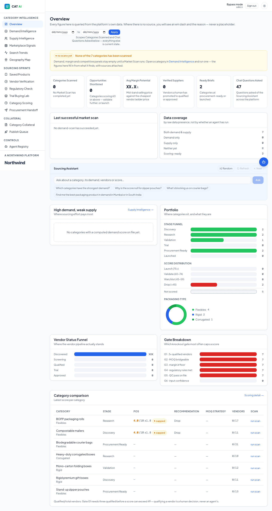
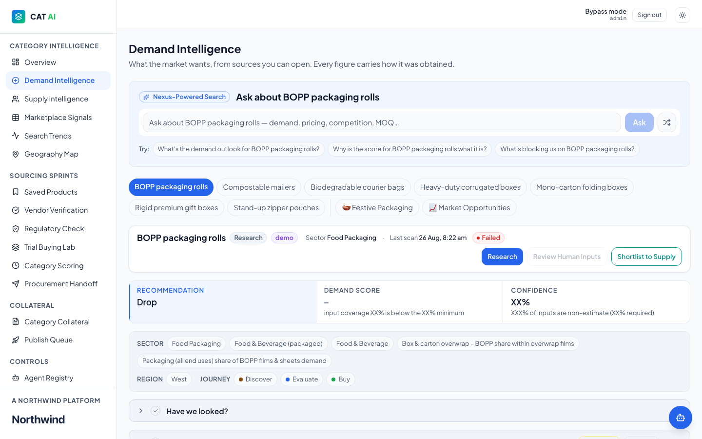
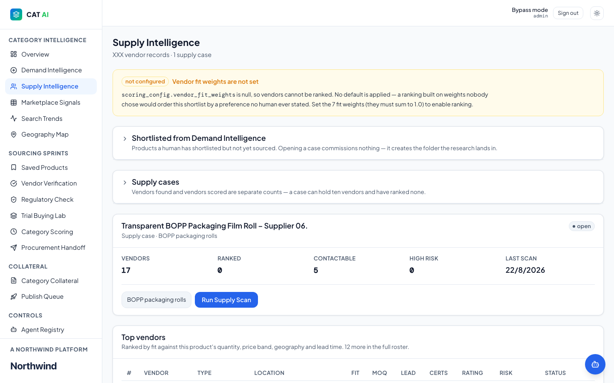
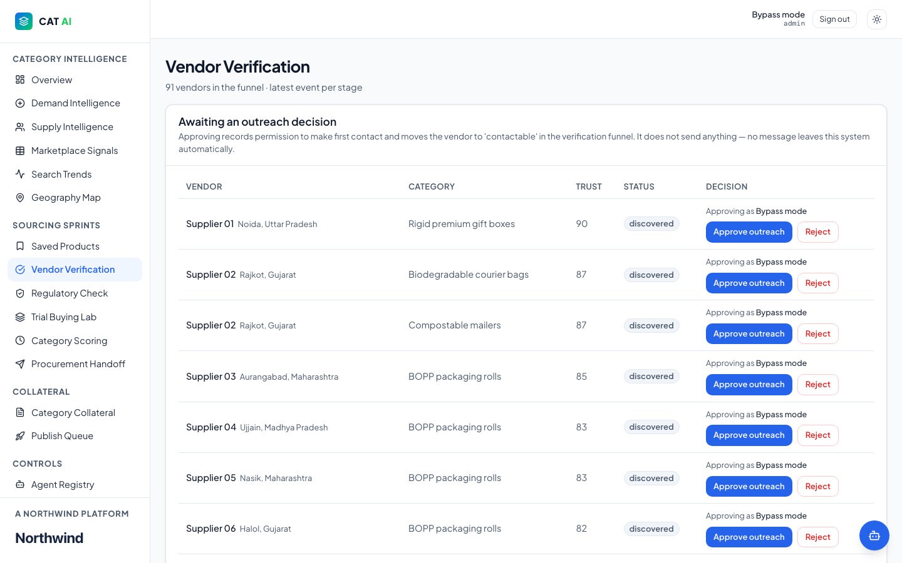
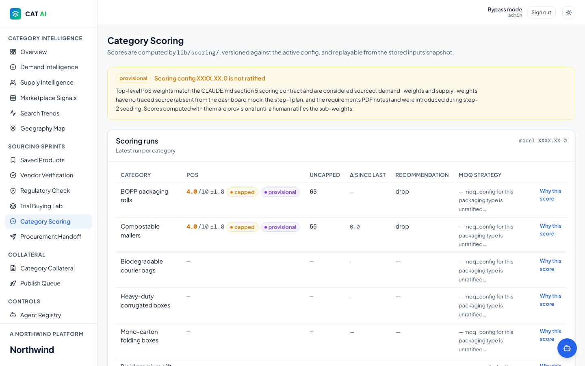

Category intelligence control plane
CAT AI
One control plane for deciding which packaging categories to launch: demand research, supply and vendor analysis, trial buying and scoring.
Problem
New packaging-category opportunities were evaluated manually — demand signals, vendor capability, and margin potential lived in separate spreadsheets with no consistent scoring, slowing category launch decisions.
Approach
Built one control plane spanning demand research, supply/vendor analysis, trial buying, and category scoring — planned in Antigravity IDE, built with Claude Code, UI on 21st.dev components.
- Over 80% improvement in productivity and market-signal coverage for category evaluation
- Structured around the actual decision sequence a category lead follows — scan demand, check supply, validate vendors, trial-buy, score — rather than a generic dashboard.
- Every module writes into one shared category record.
- Kept a bypass/admin mode separate from the live-scan flow for internal validation.
Live capture. The employer is shown under a fictional brand, Northwind Logistics. Business figures were masked with “X” and company and staff names swapped for generic labels (Client 01, Supplier 01, Sales Rep A) in the page itself, before the screenshot was taken. Nothing was cropped or blurred afterwards.
-

01Overview: the navigation follows the decision sequence (intelligence, then sourcing sprints, then collateral). -

02The full overview: stage funnel, score distribution, vendor funnel and the knockout gates that cap a score. -

03Step 1, scan demand: each category gets a recommendation, a demand score and a confidence level, with sources attached. -

04Step 2, check supply: shortlisted products become supply cases, and vendors are ranked against quantity, price band, geography and lead time. -

05Step 3, validate vendors: a person approves outreach before any vendor is contacted. -

06Step 4, score: versioned scoring weights, replayable runs and a “why this score” trail for each category.
{kind=link}
{kind=link}
{kind=link}
{kind=link}
{kind=link}